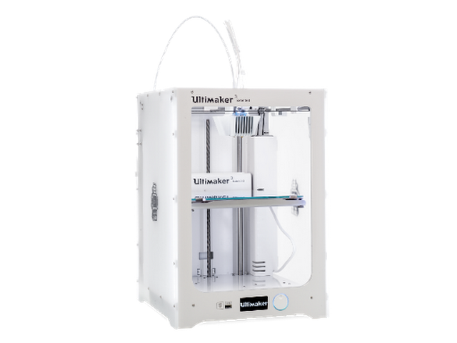

Hópverkefnið snerist um að velja 3D prentara og ákvarða hönnunar reglur/þvinganir fyrir hann með því að framkvæma prófun.
Hópurinn samanstóð af Birtu Hákonardóttur, Davíð Rúnari Matthíassyni og Elísu Ósk Jónsdóttur.
Byrjað var á að velja prentara og varð Ultimaker 3 Extended fyrir valinu. Mynd af samskonar prentara má sjá hér að neðan.
Því næst var forritinu Cura hlaðið niður, en það er forrit sem styður prentarann og er notað til að breyta hönnunarskrám í sérkóðaðar skrár fyrir 3D prentun og ákvarða stillingar fyrir prentunina. Það fyrsta sem þurfti að gera eftir að forritið var opnað í fyrsta sinn var að velja þann prentara sem nota átti til 3D prentunar.
Ákveðið var að nota tilbúna prófun sem fékkst á thingiverse.com, en kennarinn benti á þessa prófun í fyrirlestri. Markmið prófunarinnar var að sýna fram á nákvæmni 3D prentarans og innihélt hún til dæmis tvo bogalaga, yfirhangandi bita, ásamt mislöngum brúm o.fl. eins og sjá má á myndinni hér að neðan.
Prófuninni var hlaðið niður af vefnum og STL skráin opnuð í Cura. Stillingarnar í Cura voru sjálfkrafa á "Fine" profile með fyllingu 20% og átti þá að taka rúma 4 klukkutíma að prenta prófið út. Það var ekki spennandi fyrir einungis 13g stykki og því ákveðið að stilla á "Fast" profile, án þess að breyta fyllingunni. Þá fór tíminn niður í 1 klst og 51 mínútu, sem var ásættanlegt fyrir verkið. Þá var skráin vistuð á USB lykil og 3D prentun hafin.
Hér má sjá mynd af prófuninni í prentun.
Útkomuna má svo sjá hér að neðan.
Niðurstöðurnar leiddu í ljós að yfirhangandi bitarnir fóru að vera óreglulegir í 60 gráðum og voru orðnir mjög óreglulegir í 70 gráðum. Brýrnar komu allar mjög vel út og strengirnir (e. stringing test) sömuleiðis. Af oddunum tveimur var sá hærri mun oddhvassari og í þvermálsprófinu sást nær eingöngu í stærri textann, þann sem var 14/10 mm, en hann sást þó ekki fullkomnlega. Tolerance prófunin kom einnig ekki glimrandi vel út og því ljóst að prentarinn réði ekki vel við mjög þunnar línur eða dældir.
Út frá þessum niðurstöðum gátu teymismeðlimir nú aðlagað sín eigin módel fyrir 3D prentun og niðurstöður úr þeim hluta verkefnisins er að finna á vefsíðum þeirra.